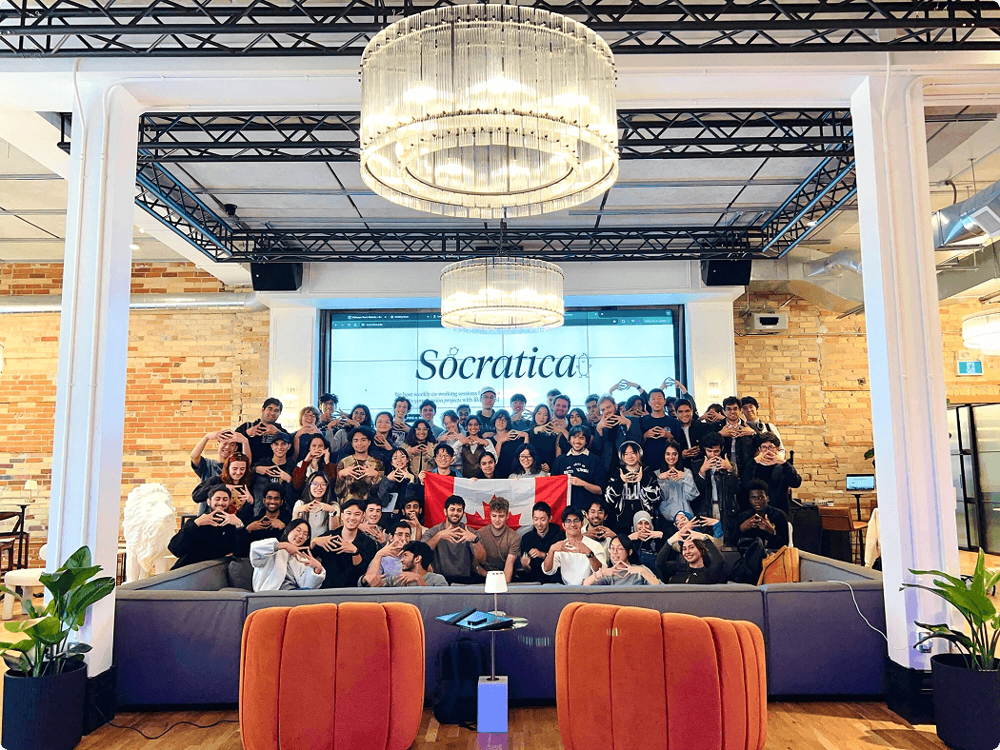
Introducing
The Socratica Symposium 2026 website!
The Symposium 2026 branding greets you with painterly effects, whimsical characters, and an aesthetic that intentionally emits a sense of passion, scrappiness, and childhood dreams.
However, this massive event is just the most recent entry in a much longer journey. What you see today is the culmination of years spent shaping the visual language of this community from the ground up. Here is the deeper story of how we pulled it off, how the brand evolved alongside the movement, and how Socratica ultimately became the defining part of me.
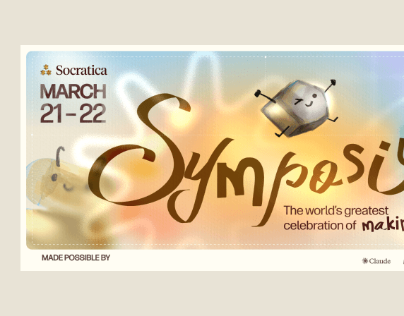
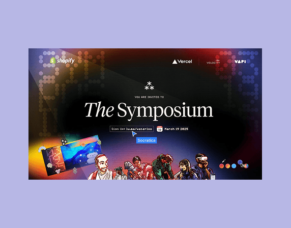
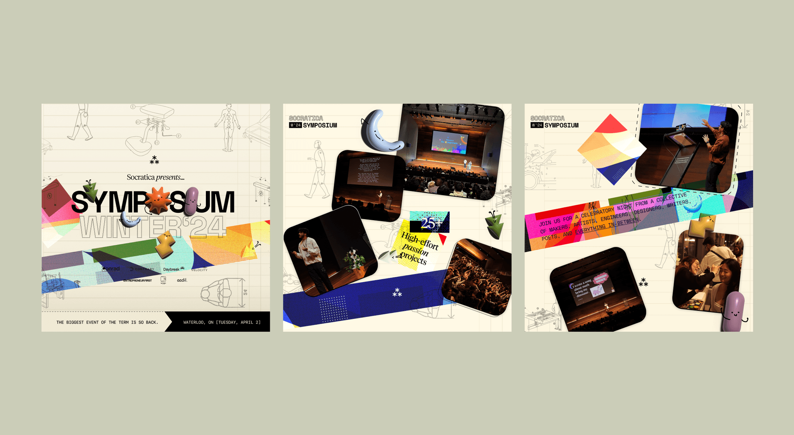
What is Socratica?
From Sunday co-working sessions to a global phenomenon
Originating at the University of Waterloo around 2022, it began as a grassroots initiative where students met on Sundays for Pomodoro co-working sessions, snacks, and open demos. Since then, it has exploded into a global network with over 30 nodes worldwide.
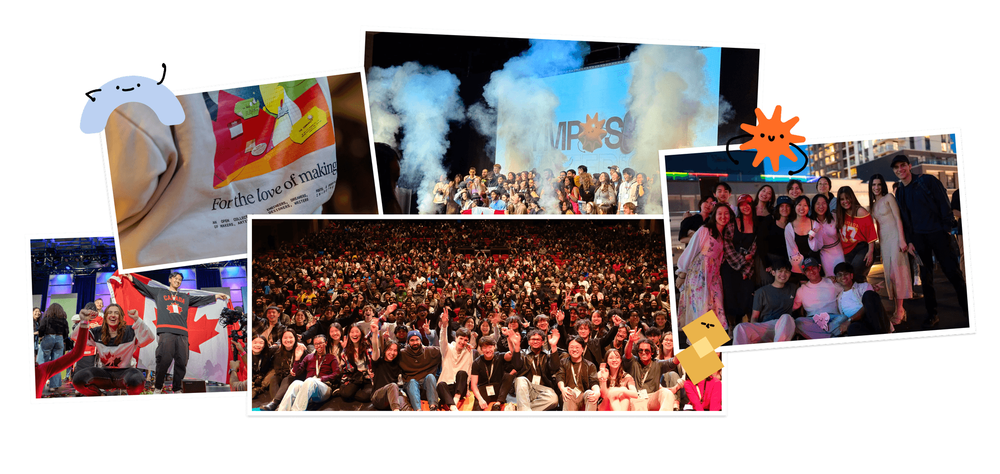
The impact
A two-day regional takeover in Waterloo, Ontario
Elevated raw passion projects into a 3,000-person, multi-disciplinary exhibition
A unified design system scaling the scrappy, intimate ethos of Socratica to over 50 global chapters.
The very first steps
Scaling the magic through designs
I was lucky to stumble upon Socratica during my very first year at Waterloo. Since then, it has became a cornerstone of my university experience.
Over time, I’ve contributed to the community not just as an attendee and host, but also as a designer whenever I could lend a hand. Through this work, I’ve seen firsthand how thoughtful design significantly reflects and reinforces a sense of belonging within this ever-growing community.
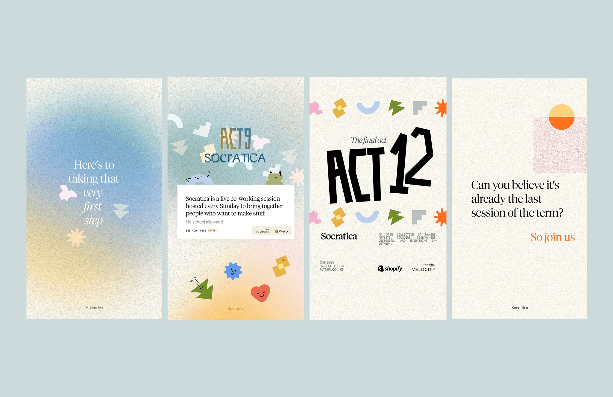
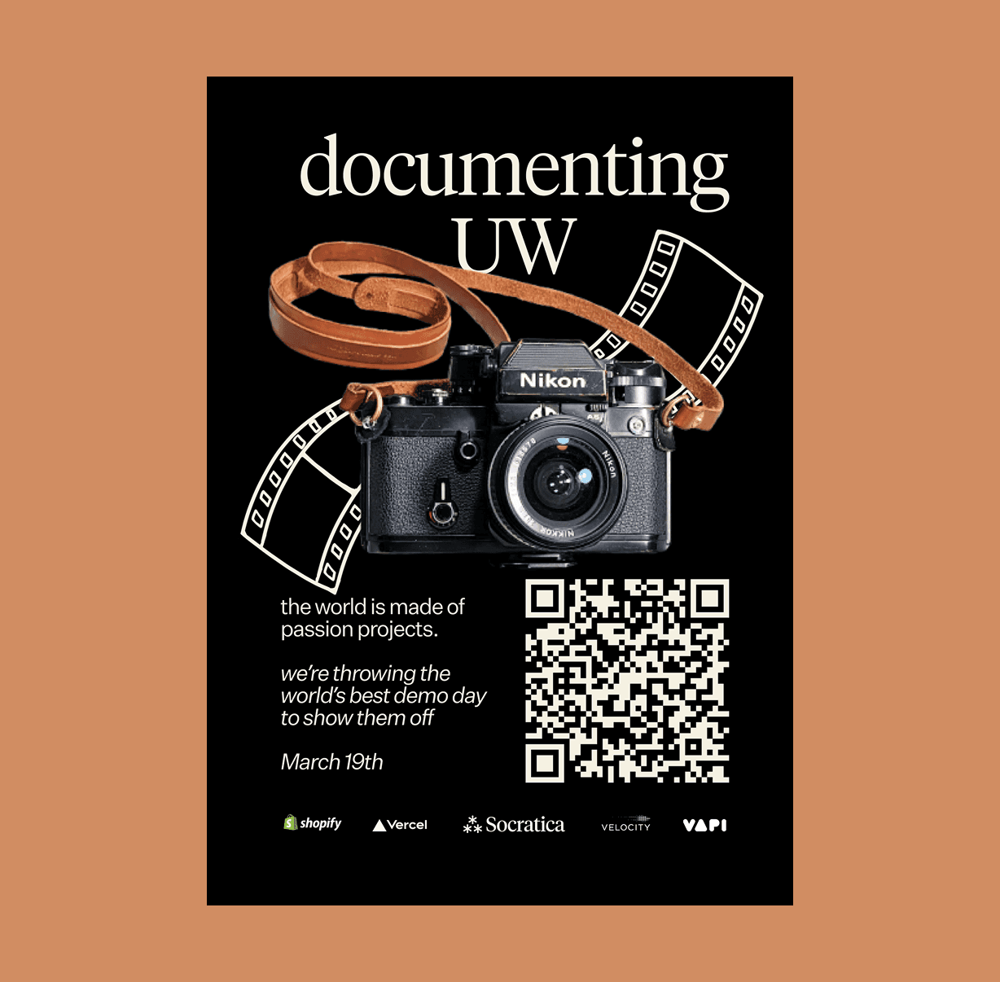
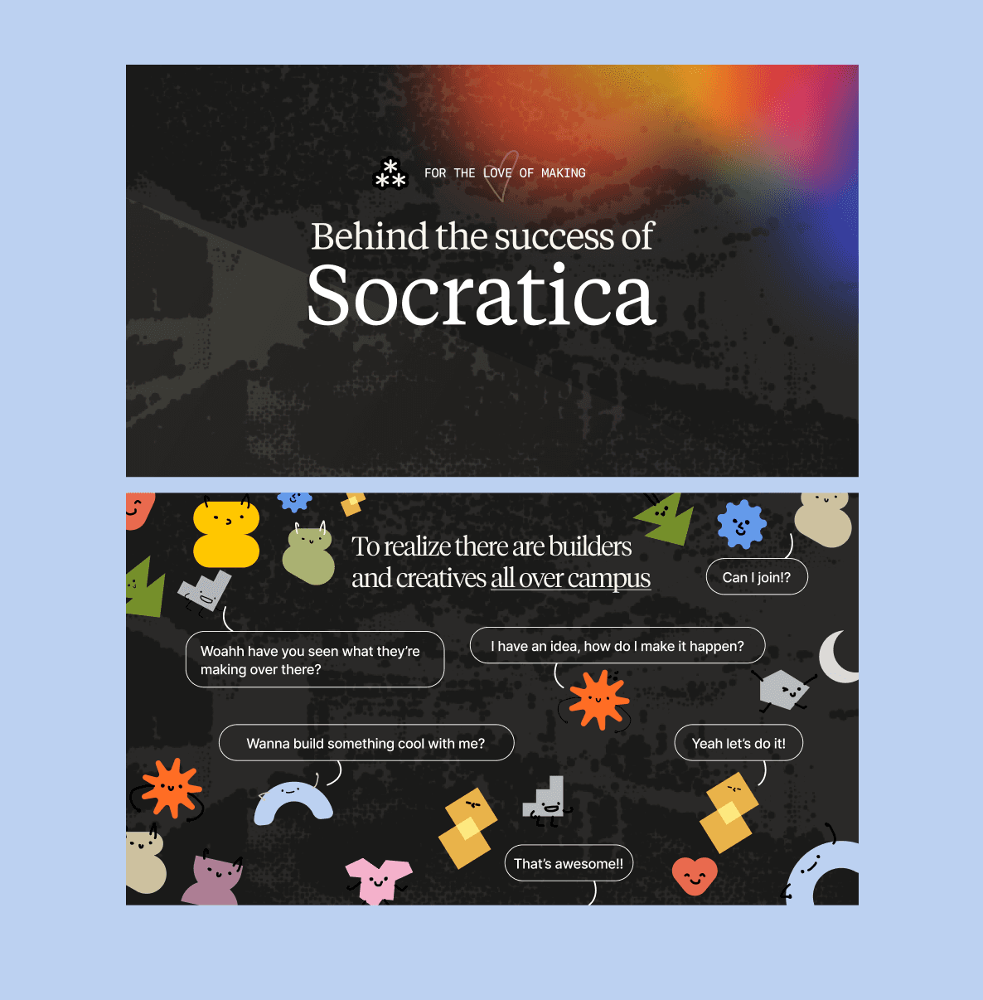
An event, of our own
The Night at the Museum
However, for me, the most memorable part was the three-day design sprint leading up to the Fall 2024 End of Term Event: A Night at the Socratica Museum.
I singlehandedly designed all the visual assets for the event: posters, signage, nametags, demoer signs, tickets, IG post + stories, and more. It was a whirlwind of late nights, caffeine-fueled focus and rapid iteration, but with the support and feedback from my team, it was truly magical to see my designs come to life that one night.
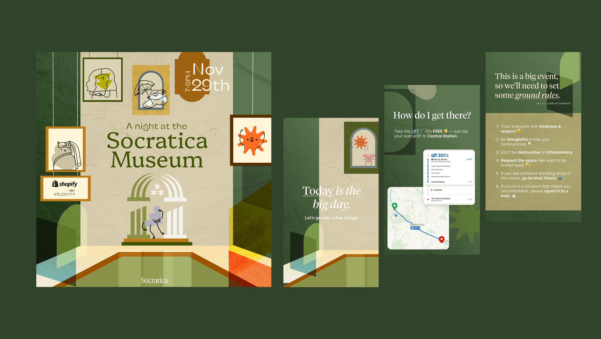
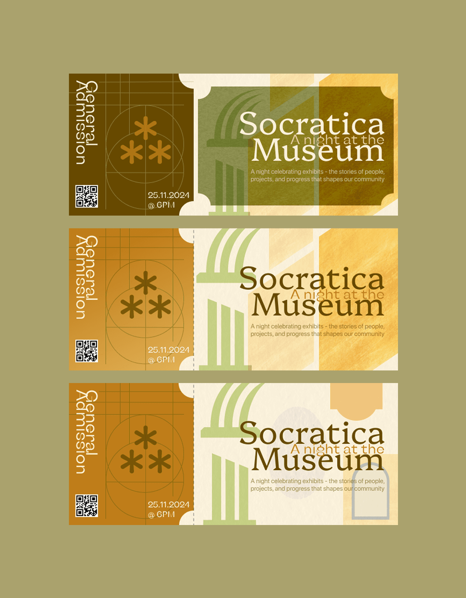
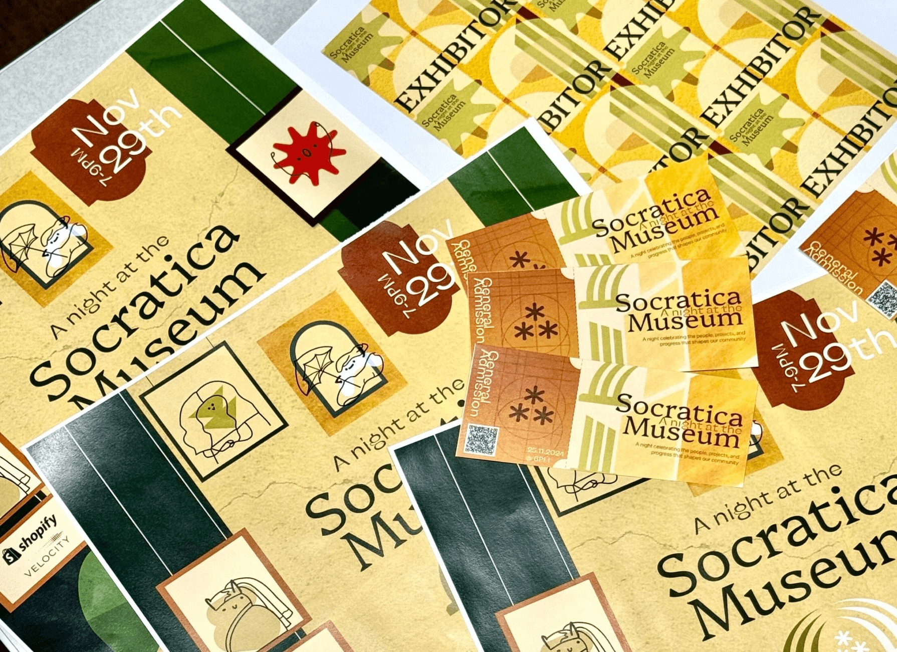
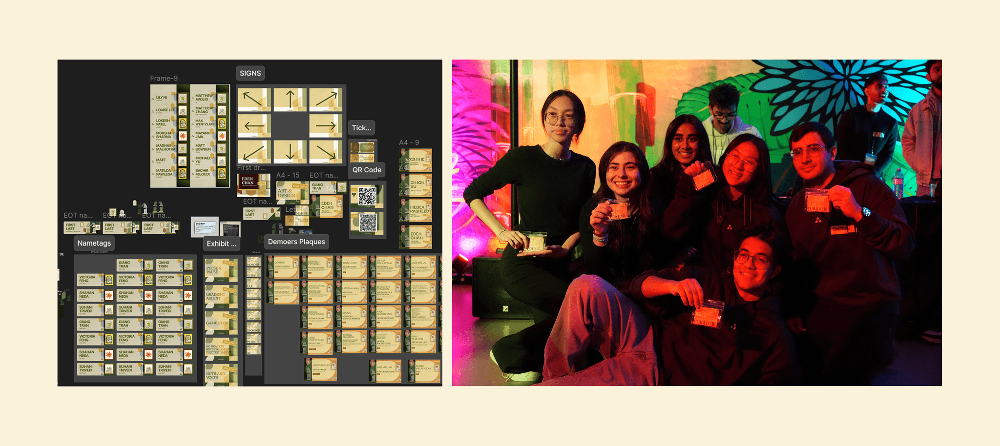
End it with a bang!
Orchestrating an arena-scale exhibition for 3,000 builders.
During my time with Socratica, I led a complex brand evolution: scaling the visual identity and orchestrating our flagship Symposium.
From September 2025 to April 2026, my role shifted from designing the digital foundation to leading a team to build out the physical environment. We had to take the whimsical, painterly aesthetic of our digital identity and make it tangible for 3,000 attendees navigating a massive two-day festival.
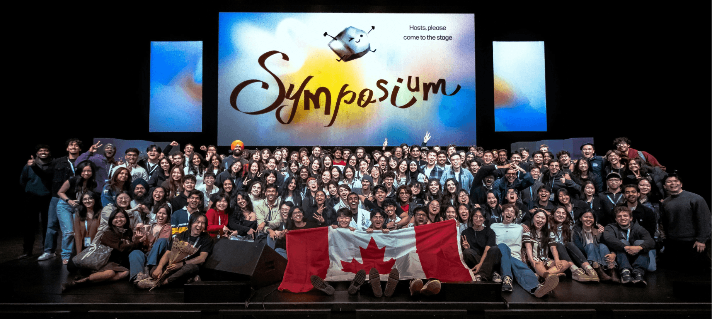
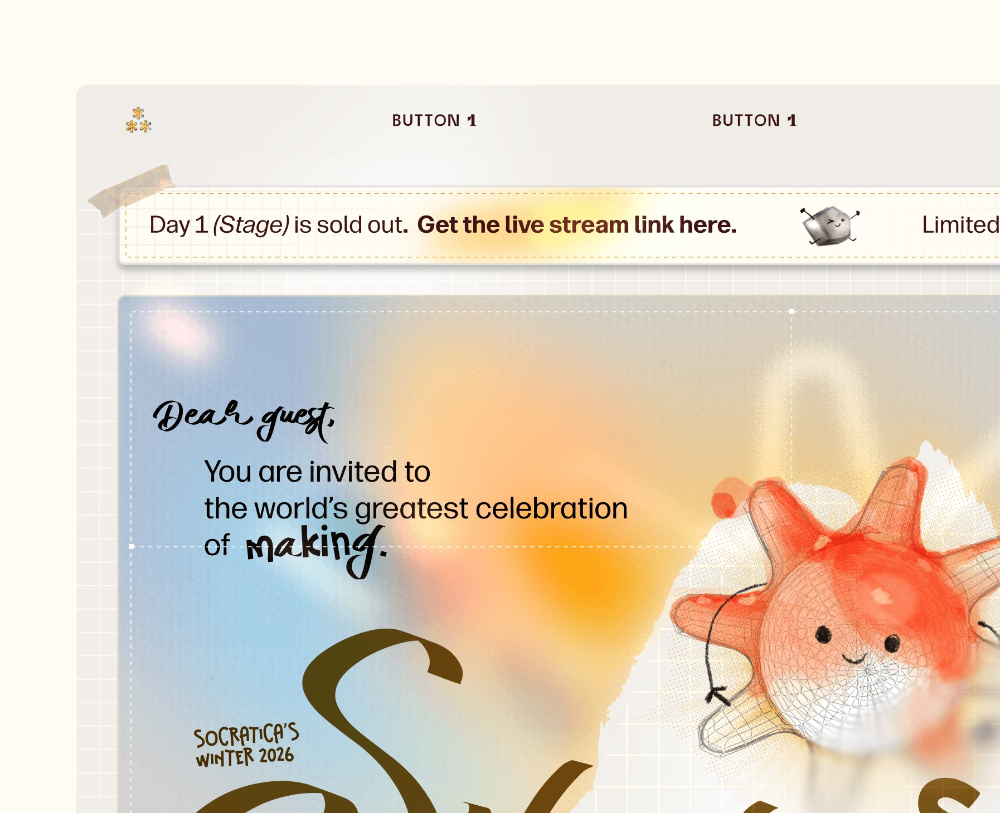
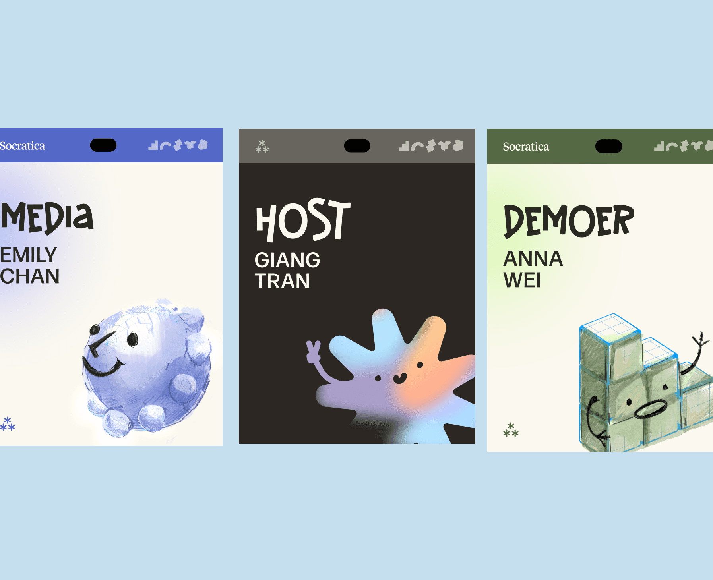
The result was more than just an event; it was a carefully curated environment built to inspire.
By bringing these physical touchpoints to life, we established a unified visual identity that is now synonymous with the builder community, ultimately fostering a space where hundreds of young creatives felt entirely empowered to share their work.
Next case study
Persona